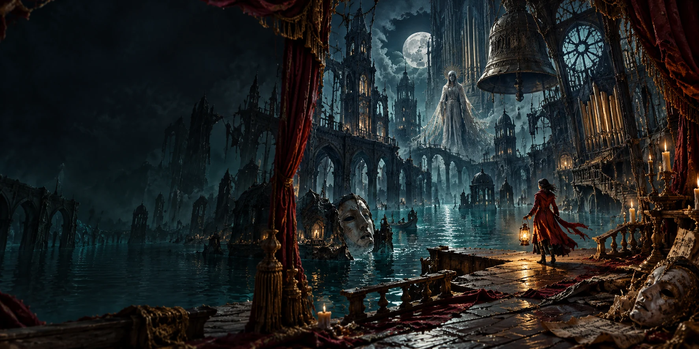

Saint Orison drowned. Its voices did not. This prologue follows Mara through six connected scenes in search of her brother’s last recording.
Story, characters, costume meshes, articulated rigs, room architecture, gameplay, echo effects, and the seven-note musical motif were authored for this game. The environments are real 3D stages viewed through a fixed side camera. Key art and the distant city painting were created with built-in AI image generation; character meshes and playable geometry are authored in code.
Audio source notices. Narrative recordings are represented through text, music and echo silhouettes.